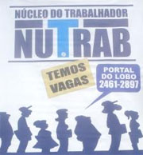

 Fundado pelo analista político Fernando LOBO, o NUTRAB tem o objetivo de intermediar mão-de-obra para geração de emprego, com a finalidade de fomentar a empregabilidade no Estado do Rio de Janeiro.
O serviço é totalmente gratuito.
Após a pré-seleção, os agentes do NUTRAB encaminham os candidatos às empresas conveniadas para seleção final.
Se você está procurando uma oportunidade no mercado de trabalho, compareça levando seu currículo. A sua oportunidade de entrar no mercado de trabalho pode estar mais próxima do que você imagina.
Estamos aguardando você.